作者：李大虾 二斤
在电影史最佳电影的评选中，英国电影月刊《视与听》的评选影单可以说是最有分量的。
这个评选，自1952年开始，每十年才评选一次。
会邀请最顶尖的影评人和导演投票选出他们认为有史以来最伟大的十部电影。
截至目前，69年的时间，影评人一共评选了7次。
后来1992年才出现的导演评选一共评选了3次。
每次只能选10部电影。
可以说，能进入这个影单的电影真的是会名垂影史。
这其中有一部东亚电影的排名变化非常有意思，这部电影就是小津安二郎的《东京物语》。
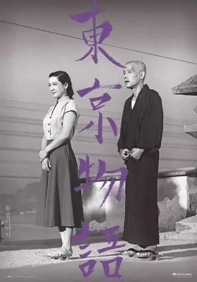
《东京物语》在1953年上映，错过了《视与听》的第一场评选。
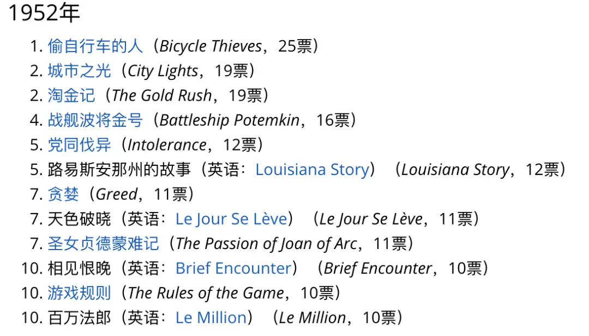
下一个十年，1962年，《视与听》的十佳电影里未见他的踪迹。
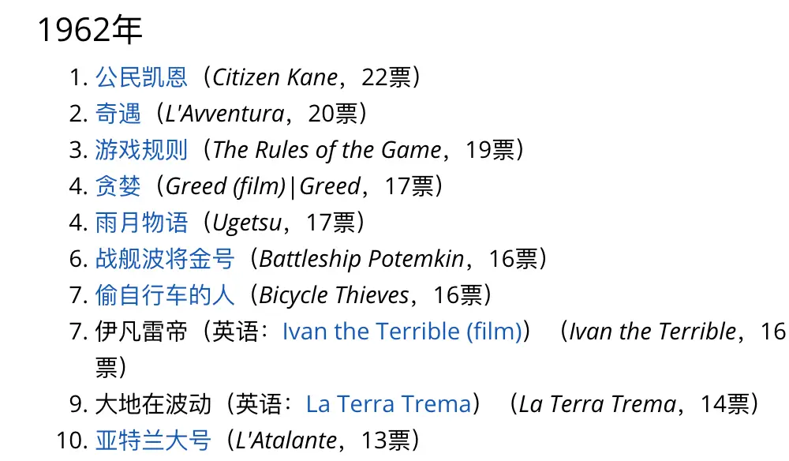
1972年，依旧不见其影。
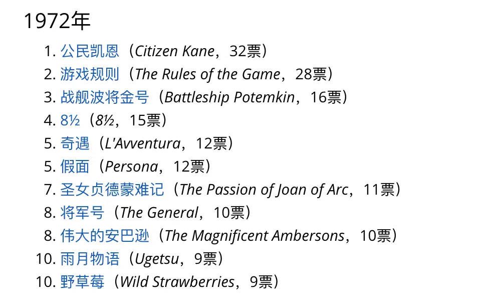
1982年，依旧没有上榜。
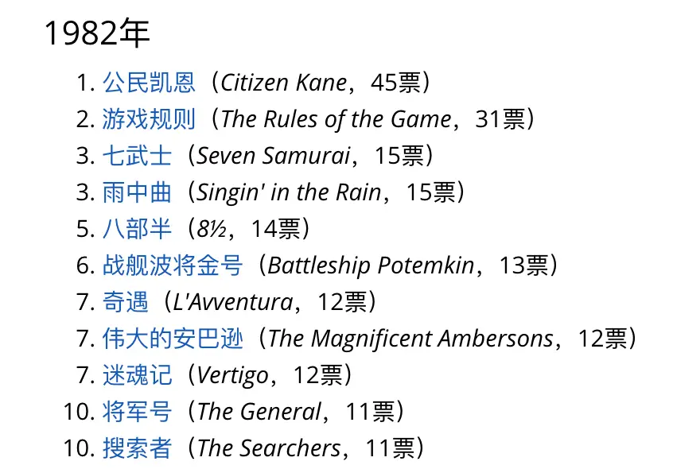
电影上映后的40年，1992年《东京物语》一下子出现在影单，并且雄居第三，成为了排名最靠前的东亚电影。
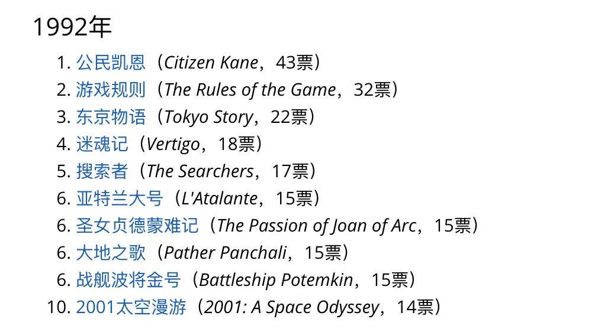
2002年，《东京物语》排名第五，依旧是亚洲第一。
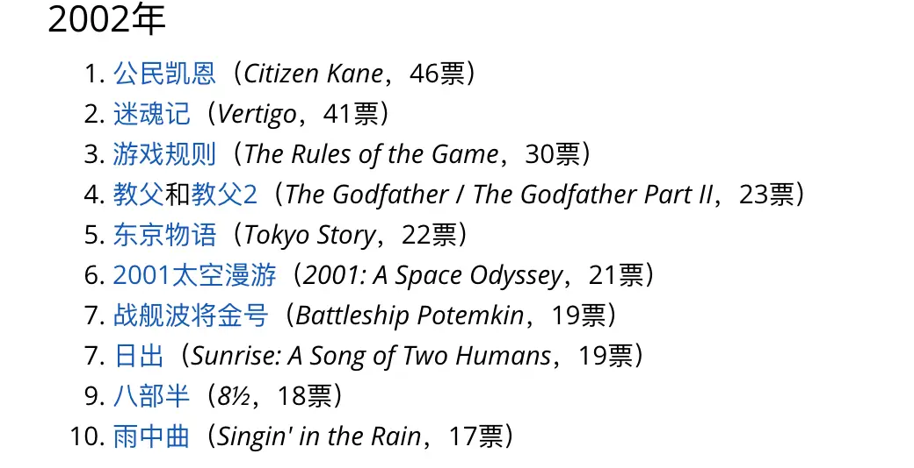
2012年，影评人的十佳中，《东京物语》再次回到第三的位置。
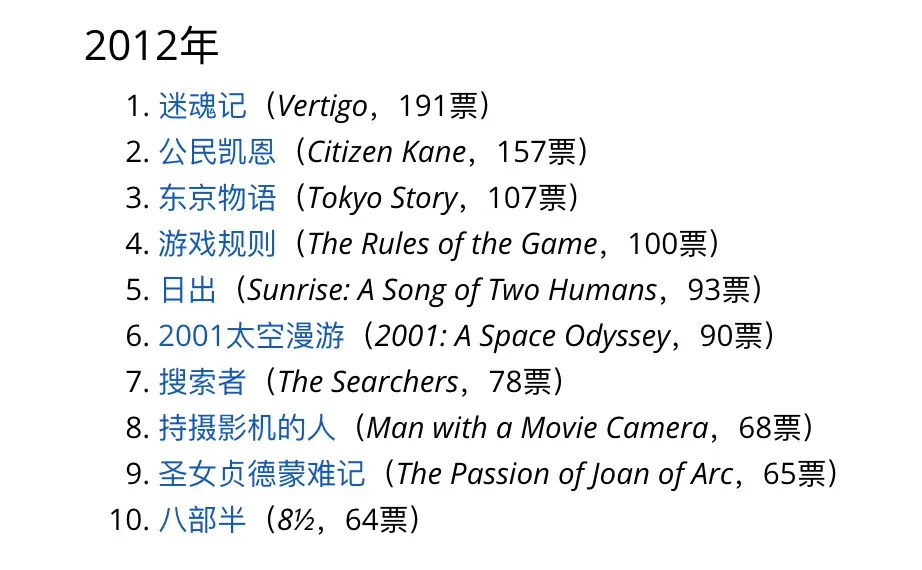
而在当年全球顶尖导演的投票评比中，这部亚洲电影傲居全球第一，胜过《2001太空漫游》和《公民凯恩》。
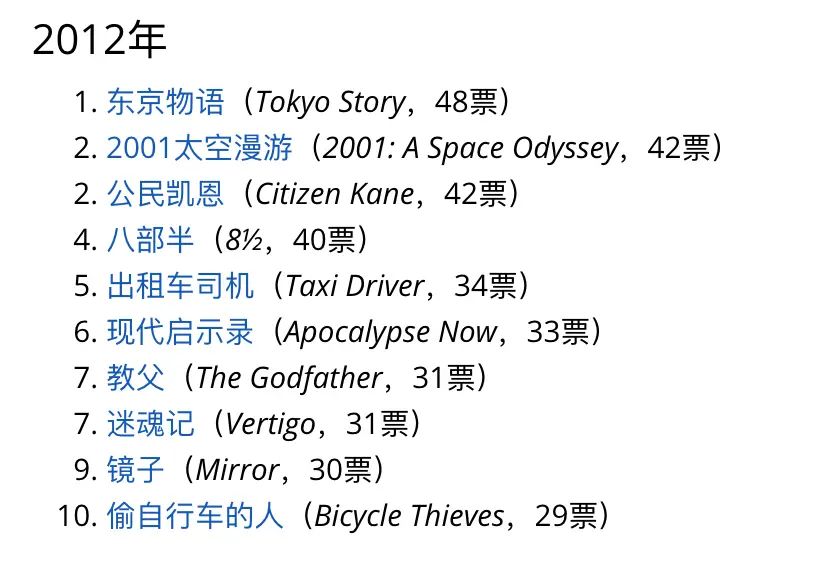
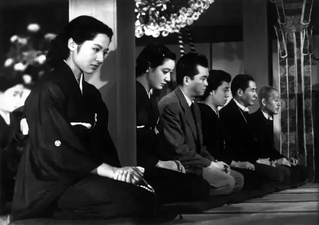
从《东京物语》诞生到现在，68年的时间里，这部电影历久弥新，时间越久，全世界才越发知道这部作品有多宝贵。
因为《东京物语》实在是太深刻了，他早在几十年前就深刻洞见了今天现代家庭所面临的难题。
《东京物语》也实在过于低调平和，以至于全世界要花上几十年的时间，才能真正体会到他的力量。
可以说，《东京物语》永远是一部值得我们反复探讨的伟大作品，我也曾在两年前就点评过这部作品。
最近，好朋友二斤再次重提这部作品，他对这部作品的观察启发了我。
再加上自己年近三十，我自己本身就处在家庭的割裂中。
再一次，我在《东京物语》中找到了共鸣，我也迫不及待地将我们的思考分享给大家。
《东京物语》讲了一个再平常不过的故事。
在乡下的周吉夫妇平日里和小女儿京子住在一起。
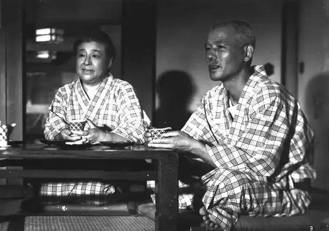
夏天来临，天气燥热，周吉夫妇决定去看望自己远在东京的儿子与女儿。
出发前，邻居就很羡慕地说，“孩子们在东京一定等急了.....你们的孩子真有出息，你们真是幸福”。
车马行舟一番后，周吉夫妇终于见到了已经各自成家的儿女。
大儿子幸一医学博士毕业，在东京郊区开了一家诊所。

为了给两个老人腾地方，不得已，大儿媳妇只能将自己孩子的书桌移到房间的角落。
孩子很不理解，生气地将书摔在地上。
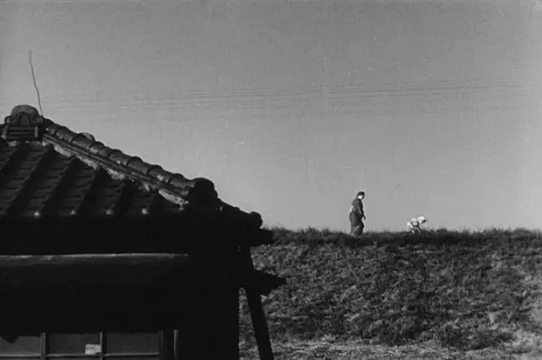
两个老人在大儿子家住了将近三天，却还没有机会在东京转一转。
终于，大儿子抽出了时间，打算带着老人游玩。
正当大家一切就绪的时候，大儿子忽然收到出诊的请求，出游只能作罢。
看着孩子这么不容易，老人家也很理解。
只是默默地坐在阳台上呼吸着东京的空气。
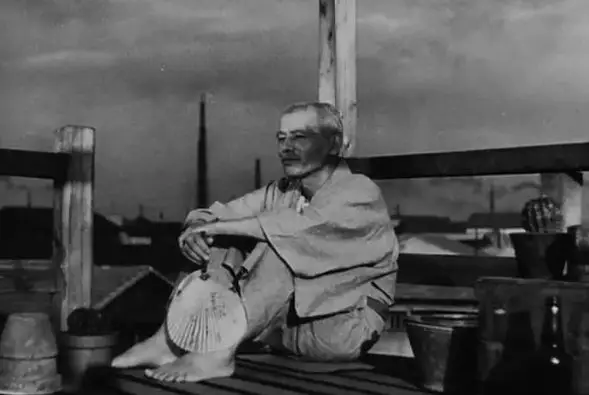
知道游玩计划无故取消，小孙子立马大肆哭闹，周吉夫妇只好尴尬的哄着。
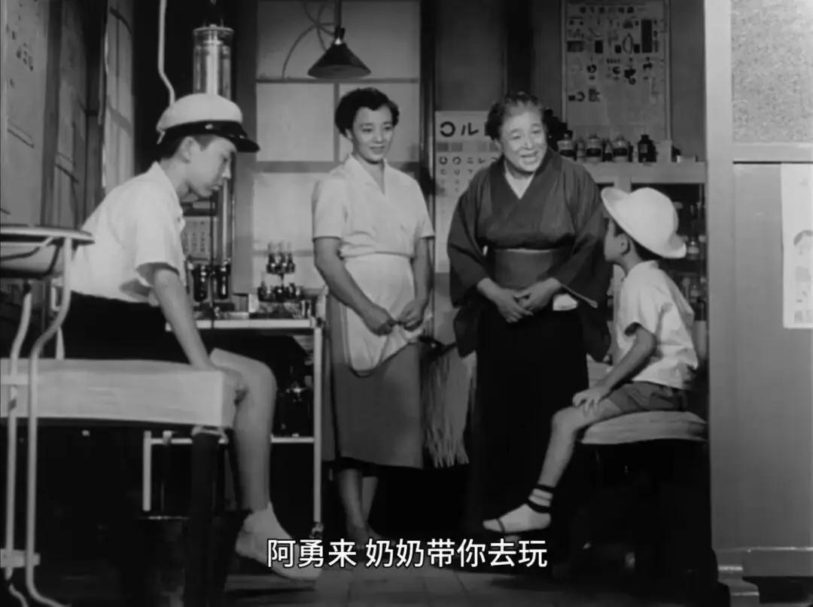
大儿子很忙，老人家又来到了大女儿家，大女儿开着一个美容美发店，工作自然也是很忙。
老人来之前，女婿问大女儿，老人现在在大哥家，我是不是要去打个招呼。
大女儿却说“不用去了，反正老人会过来的”。
当老人过来后，女婿从外面买了糕点回来，却被大女儿抱怨“怎么买这么贵的东西呢....”
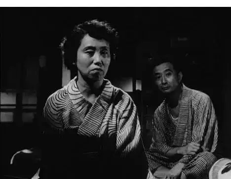
大女儿繁也因为要照顾店里的生意而抽不开身来陪伴老俩口。
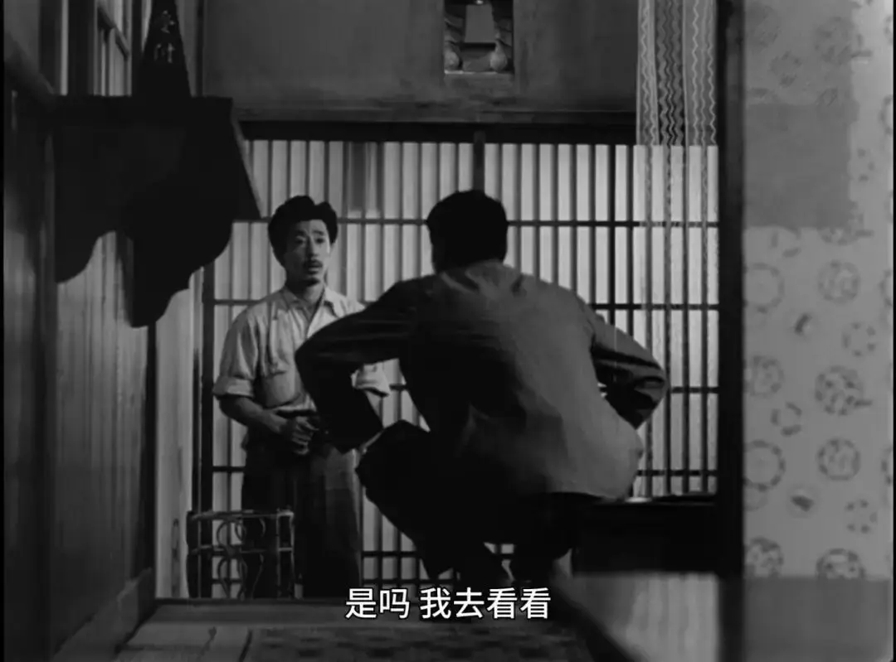
父母不远千里而来，大家却没有空陪伴，幸一与繁也觉得很对不起父母。

无奈之下，繁想到了弟弟昌二的遗孀纪子，于是打电话给纪子，让弟媳带着父母游玩东京。
纪子一个人在东京，生活并不容易，也是在辛苦地打拼。
接到嫂子的电话后，纪子诚惶诚恐，非常激动。
于是，纪子马上向公司请假，第二天带着父母一起在东京游玩。
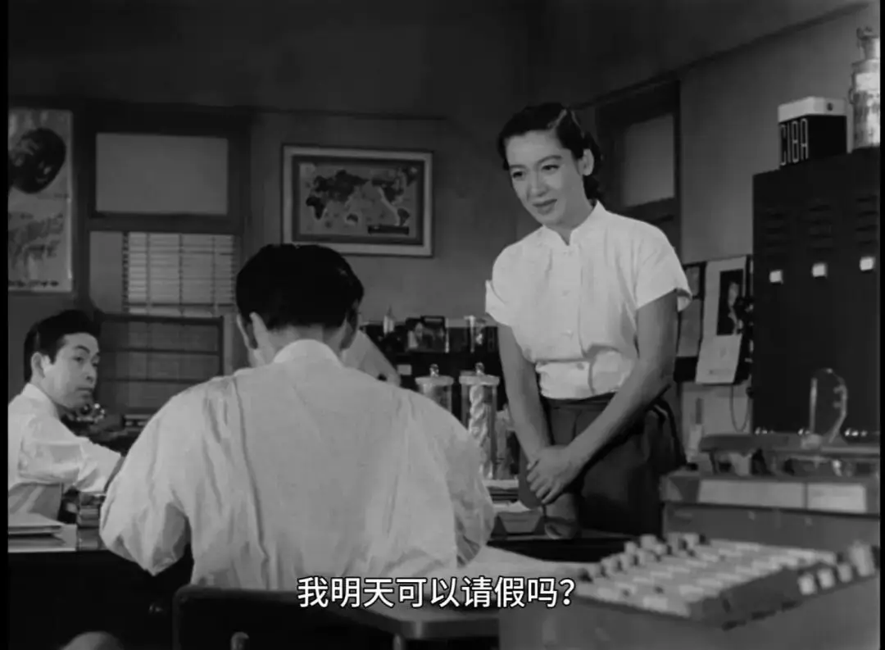
整整一天，纪子总是面带微笑，悉心照顾两位老人。
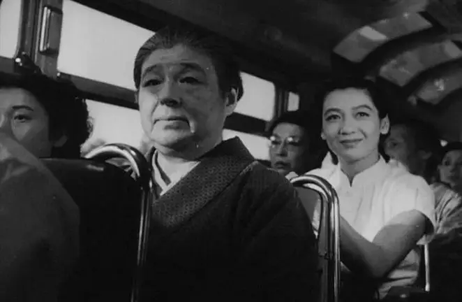
到了傍晚，纪子带着周吉夫妇回到自己家休息。
老两口看着二儿子昌二的遗照，心中不免叹息和悲伤。
昌二在二战中去世，到现在已经足足八年了。
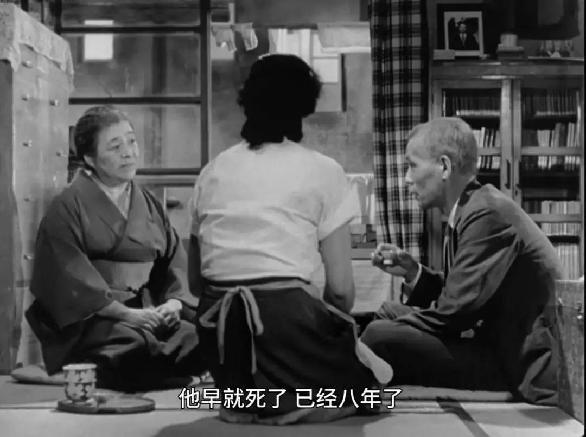
而纪子也在孤独中度过了八年。
虽没有直接说出口，老两口对纪子是心存感动和愧疚的。
老两口也不好意思继续麻烦纪子。
后来他们告别了纪子，再次回到自己儿女家，可迎接老两口的还是繁忙的身影。
幸一与繁心中过意不去，但也不能总麻烦纪子。
于是他们想到个点子，决定出钱送父母去热海，既可以泡泡温泉，也可以在那边休息。
但是好心没有成就好事，温泉宾馆里有很多年轻人聚在一起熬夜搓麻将。
吵闹的声音让老两口一夜都没有休息好。
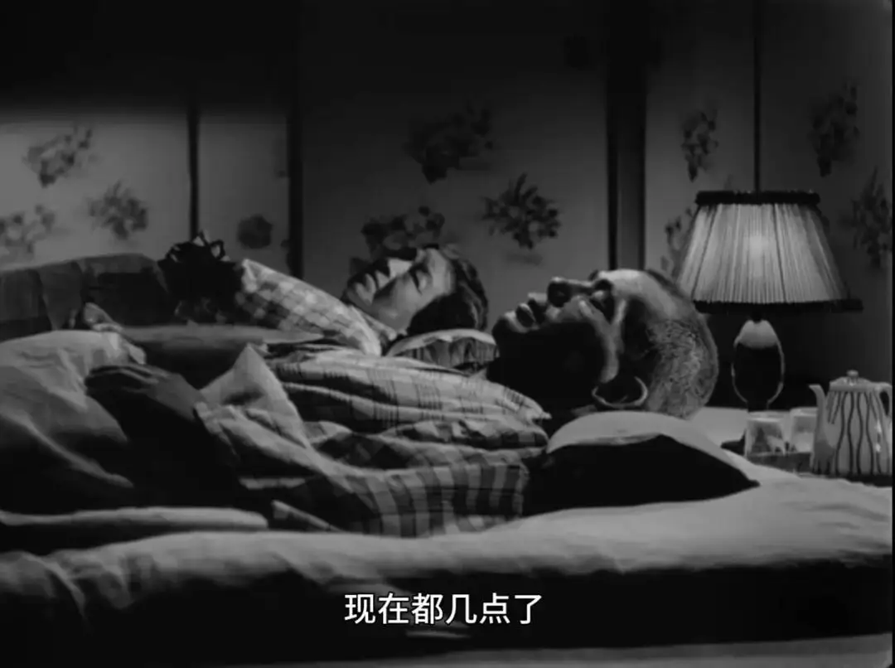

第二天，老人拖着疲惫的身体望向大海，久久没有说话。
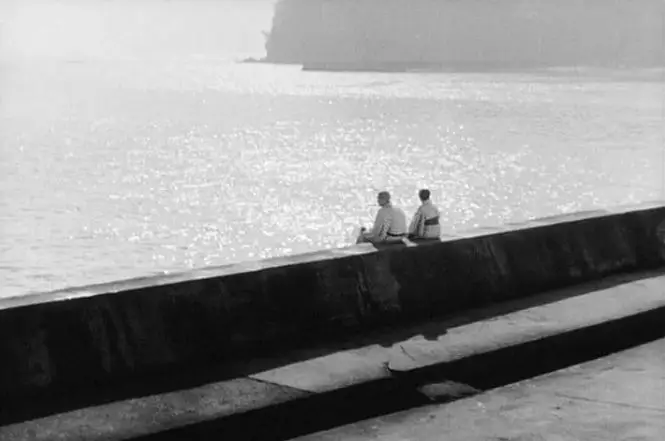
忽然，周吉笑着和老伴说，要不我们回去吧，有些想孩子了。

于是，两位老人当天返回到大儿女家。
看到两个老人忽然回来，大女儿颇有些不高兴，“还以为你们至少在那里玩几天呢，怎么一天就回来了.......恰好晚上朋友要来家里开会......回来也不提前说一下”。
自知自己给儿女带来不少麻烦，老人笑眯眯的说，恰好有老友也在东京，晚上就去看望一下他们，就先去朋友家住一晚。
出门后，老人心里很不是滋味，苦笑着说：终于无家可归了。
其实去朋友家也只是说辞，还不知道朋友家方不方便住一晚。
因此，两人商量着，老伴去纪子家，因为纪子一定不会将他们拒之门外，但是纪子家很小，不方便两人一起住下。
所以，周吉独自一人去拜访了老友。
和老友重聚，一杯酒下肚后，大家纷纷吐出了苦水。
比如一个老友吐槽，自己孩子其实只是一个科员，但为了面子对外总说自己是部长。

两位老友也不容易，没有办法给周吉提供睡的地方，但是他们都很仗义，愿意陪他喝到天亮。
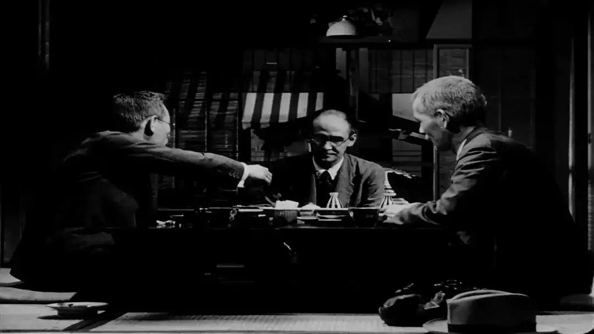
老伴没有像周吉那样落魄在酒馆里，但是一样不是滋味。
老伴心里难受，不是因为纪子不孝顺，而是因为纪子对她太好。
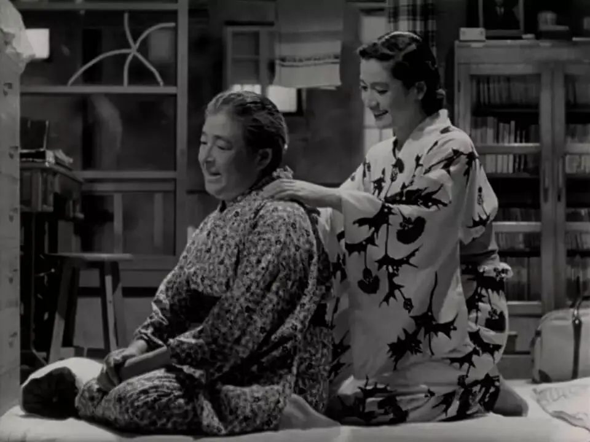
老母亲看着昌二的照片，不禁感慨：可能是离得太远了，总觉得他在很远的地方还活着。
而看着年轻善良的纪子，老人心里更不是滋味：
昌二已经死了八年 你还把他的照片放在那里，我不禁为你难过，你还那么年轻，我感到对不起。
老人告诉纪子如果碰到了合适的人，要好好把握，不必介怀，要不然将来老了无依无靠，会很寂寞。
而善良的纪子却告诉她：没关系 我不会让自己老的。
夜里，纪子睡不着觉，偷偷地落泪。
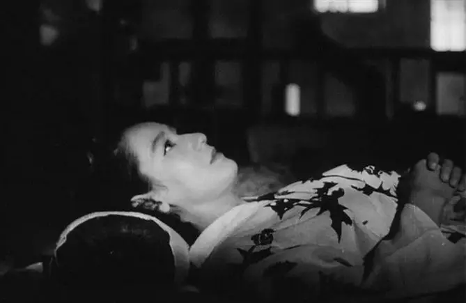
第二天很快来了，两个老人在东京住了不到一周，便决定离开。
东京的家人一起到火车站送别父母。
离别时，母亲突然说：“今天见了大家，将来万一有个什么，你们也不用特地赶来了....我说真的，我们住的太远了。”
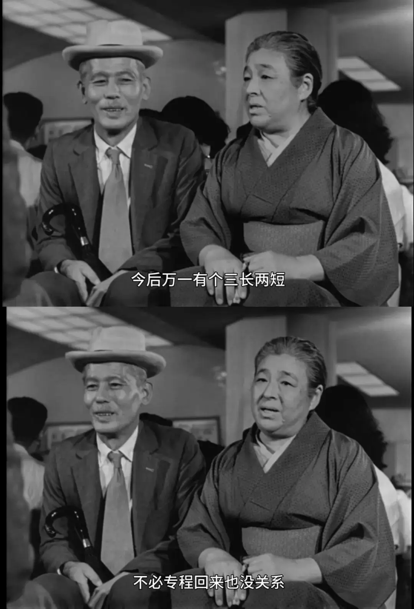
一语成谶，母亲回去后果然一病不起，没几天便撒手人寰。
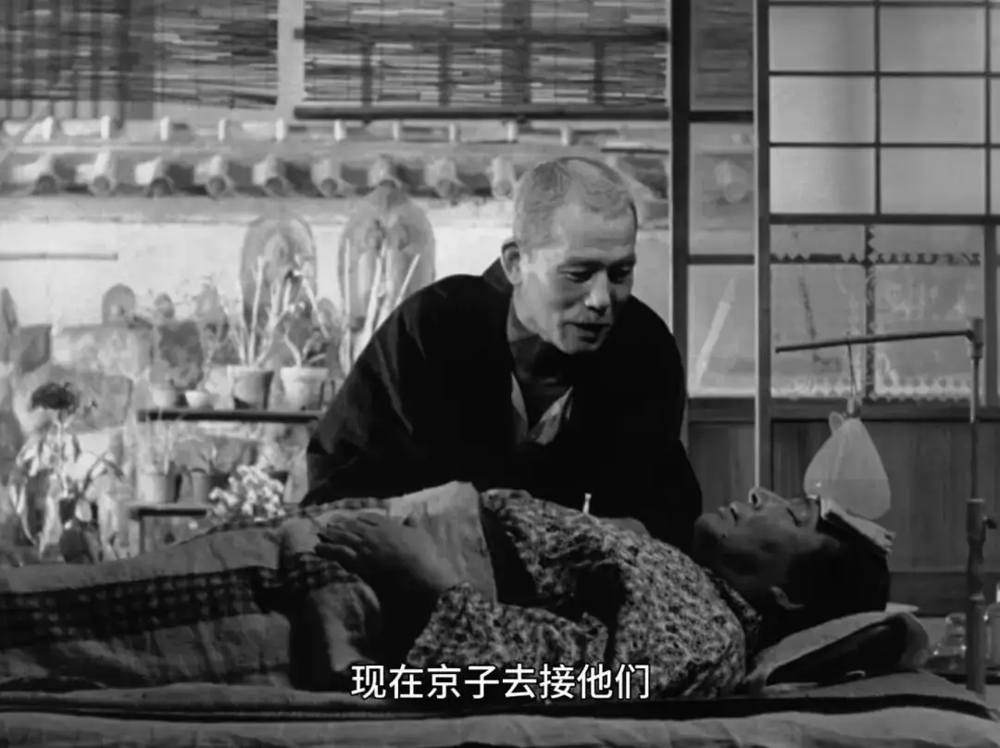
自己的身体自己心里最清楚，这场旅行似乎是一场早有预感的告别之旅。
怪不得，当小孙子告诉老伴自己将来想做医生时，老伴会说：等你做了医生，我都不知道我会不会活着。

甚至在与纪子独处的那一晚，纪子真诚地和老人说：下次来东京 ，请妈再到我这。
而老人却笑着说：谢谢......不知道再有没有机会再来。
也怪不得老人告别儿女时，会说那样的话。
即使是临终之言，老人也不想让孩子担心，只是笑着把心酸和对子女的爱独自吞咽到肚子里，隐秘而伟大。
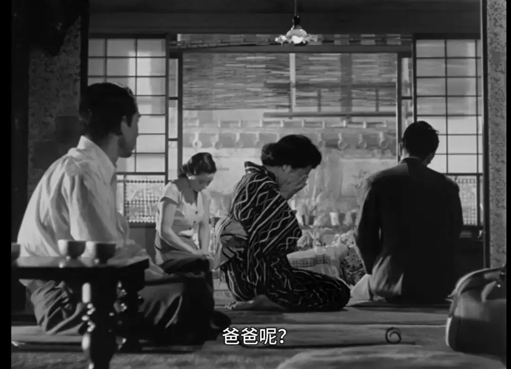
子女听闻母亲的消息也从东京匆匆赶来，但是见到的只有母亲的遗体。
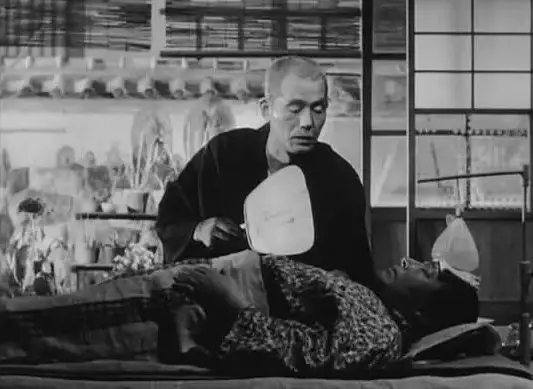
母亲的葬礼结束后，儿女们离开了家，回到了东京。
周吉在老伴离去后又了然一身，收拾东西的时候发现，儿媳纪子留到了最后。
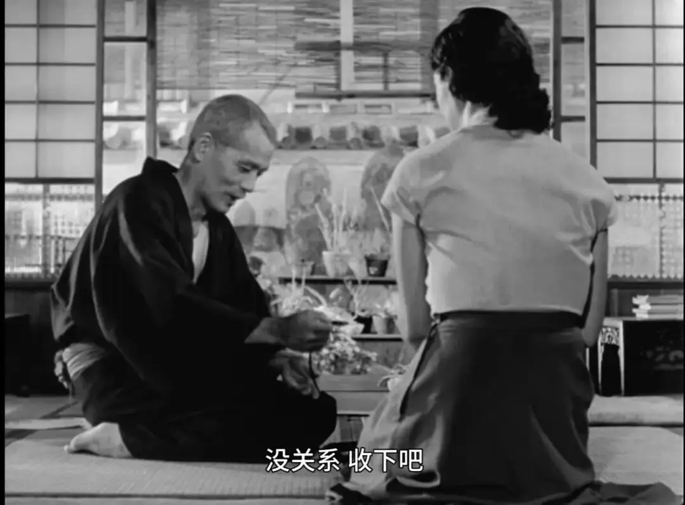
父亲把自己妻子常带的手表送给了纪子，告诉她“忘掉昌二吧，重新开始自己的生活。”
而一向面带笑容的纪子忍不住泪流满面......
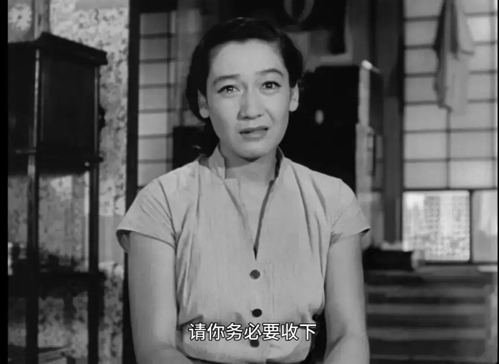
这就是《东京物语》，描述的是我们熟悉的不能再熟悉的场景。
如果是年轻人看，大家都不免为两位老人感伤，也会为善良的纪子留下眼泪，当然也不免心底里对幸一与繁产生埋怨。
但如果你成家立业了，真正去面对快节奏的现代都市，真正地面临上有老下有小的时候，你就会切身地体会，幸一与繁是人间常态。
大儿子因为工作不能带父母游历东京，孙子因为不能出去玩而不理奶奶，女儿在母亲葬礼之后就要求分了遗物。
这些看似冷漠的恶行，实际上已经成为了构成了现代家庭的日常。
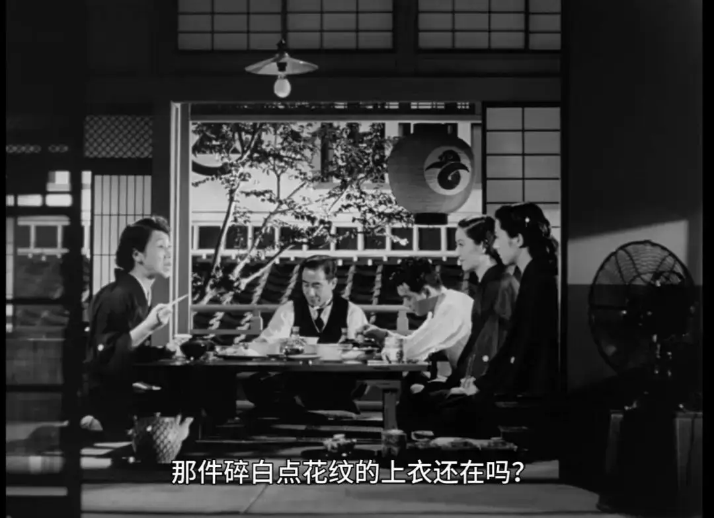
就像纪子说的一样，人长大之后终将离开父母。
当一个小孩成为社会人的时候，尤其是背井离乡去到大城市后，与故乡的联系会消散，与新家和社会工作的联结会增强。
在大儿子和大女儿的心中，他们首先要负责的是自己的家庭，而手上的工作是他们维护自己家庭生活和幸福的保障。
闲暇之余才能给自己的父母留出一些空间，可惜，作为大都市的东京，生活和工作节奏极快，并未给予他们机会来陪伴自己的父母。
但是他们依旧挂念着父母，依然很希望父母留下来多住几天。
自己没有时间，就一起出钱送父母去热海度假。
大女儿会在喝多的父亲回来后，担心父亲上楼摔倒，而让出自己一楼的床铺。
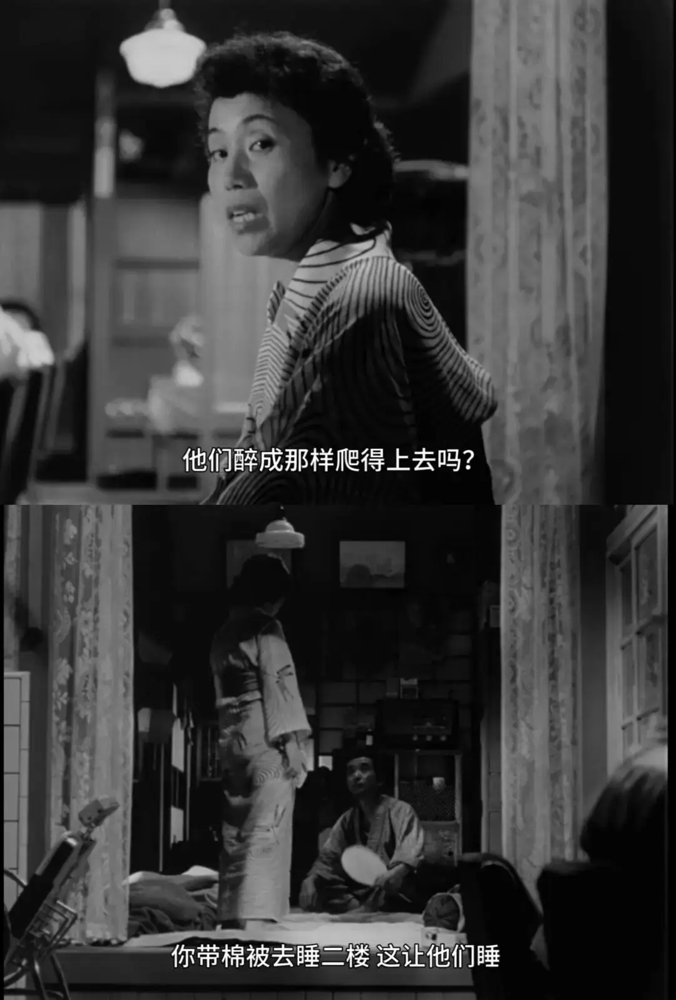
这些自以为是的付出与冷漠并存，但又是现代家庭孩子与父母之间人情的一种常态。
《东京物语》的厉害之处在于，他看穿了现代家庭的虚弱和无奈，但并没有迫不及待地进行揭露和批判。
所以，《东京物语》并未将重要的事件展现在银幕上，电影没有激励的矛盾冲突和非常戏剧性的情节，也省略了很多重要的内容，比如说两个老人游历东京的全过程、周吉在老伴病危过程中的煎熬......
《东京物语》更多描述的是极其平凡的家庭成员之间的心理矛盾，通过一次又一次的鞠躬，在那用之不竭的敬语之间，只借由人物之间谈话便不着痕迹地表达了一切。
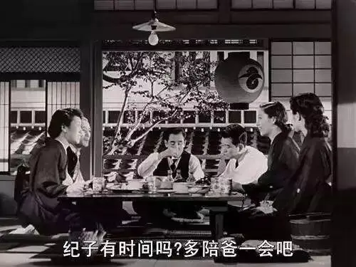
这就是小津安二郎的特质，他深刻洞见了现代生活的危机，但没有进行激烈的批判，而是像一个落魄的老父亲，端坐在榻榻米上，虽然心碎但依旧用温润慈祥的眼睛注视着一切。
城市化进程、儿女为了前程背井离乡，这首先瓦解了父母和孩子之间的空间距离。
对于这一点，电影的刻画不动声色却异常深刻且极富情感魅力。
比如当老两口初到东京时，看着这么大的东京，两位老人不禁感慨：东京这么大，失散了，这辈子都见不了面了。
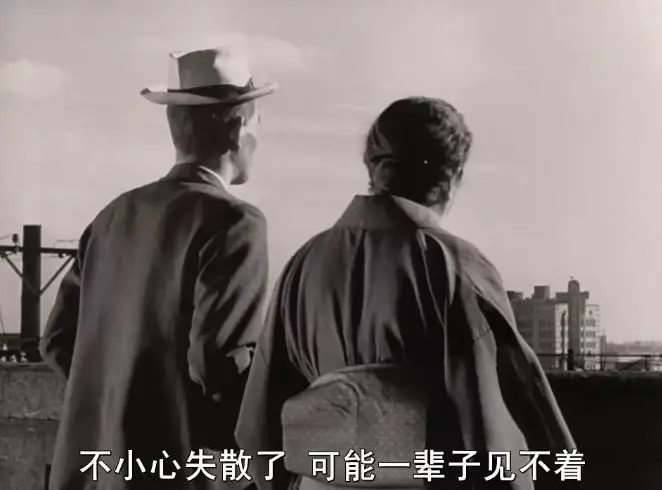
是啊，巨大空间会让很多人迷失。
有多少孩子从城市的迷宫中走出来时已是白发苍苍，蓦然回首，父母却已经溘然长逝。
在周吉和老朋友喝酒时，周吉酒后感慨：
在来东京之前，我都以为儿子有所成就，原来只是个街坊医生.....我和你一样不满，大概是为人父母的欲望，可欲望是没止境的 ，想开点吧....也许东京真的是太大了。
周吉的感慨可以说是许多父母的心声。
现代家庭中，从孩子出生的那一刻起，父母便以前途、成就、理想的名义将孩子与自己逐步推远。
可以说，孩子成熟的过程是与父母分离的过程。
但是这个过程也是父母变老的过程，父母会从培养孩子独立变得越来越依赖孩子。
当孩子有一天真的长大了，真的为着工作机会和兴趣背井离乡去到大城市时，父母也会很落寞。
而当父母有一天真的来到孩子所生活的魔都时，看到孩子在大城市苦苦奋斗，但也只是千万人口中的一个普通人时，又会不禁感慨和心疼孩子。
可孩子因为大城市的工作机会和教育资源无法回到家乡。
而父母也因为无从适应诺大的城市无法走入孩子的世界。
除了空间的断裂，大城市飞快的时间也让人也无法停歇行走的步伐。
于是，父母与孩子渐行渐远，不要说彼此守护，一年能够一起住上几天已经是十分奢侈。
更加残酷的是，当我们成年工作后，我们与父母相见的机会甚至不会超过一百次。
我想，这也是为什么《东京物语》的排名如今会排到世界第一。
因为，这种家庭的隔阂，这种骨肉分离的无奈，已经成为了现代人普遍的痛！
而《东京物语》不仅给了我们共鸣，更借着纪子对我们表达了理解。
在母亲的葬礼结束后，面对大哥、大姐的冷漠，小女儿京子愤慨地告诉纪子：他们太自私了，讲完一堆空话 ，头也不回地走了，外人还有感情，骨肉却没有....
纪子却温柔地告诉她：
他们有自己的生活…在你这个年龄的时候，我也会像你这么想,可是子女们长大了，会离开自己的父母。
当一个女人到你大姐这个年龄，她会有自己的生活，我相信她没有恶意，他们都以自己的生活为重。

小津借着纪子不仅表达了对年轻人的理解，更借着她表达了传统家庭价值的魅力。
在纪子告别周吉的时候，周吉告诉纪子，希望她能够重新开始，这也是老伴的愿望。
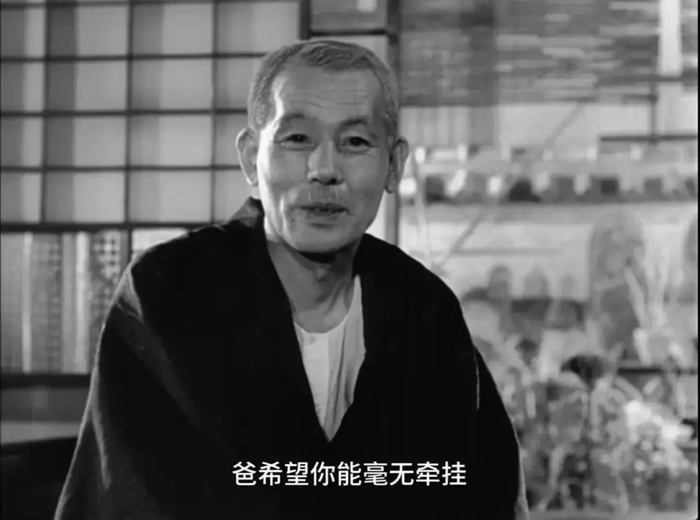
纪子欲言又止，终于还是告诉周吉：
不，我不像你们所说的，我很自私，并不如爸妈想象般，常常惦记昌二.....
最近,甚至想不起来的时候也有，也许忘记他的时候更多，我也想过不能长此以往一个人生活，有时半夜醒来，也会想到这个问题......
天天一事无成的过日子，有时十分寂寞.....我内心深处，还在等待什么似的.....
所以我很自私，但我没勇气向妈表明。
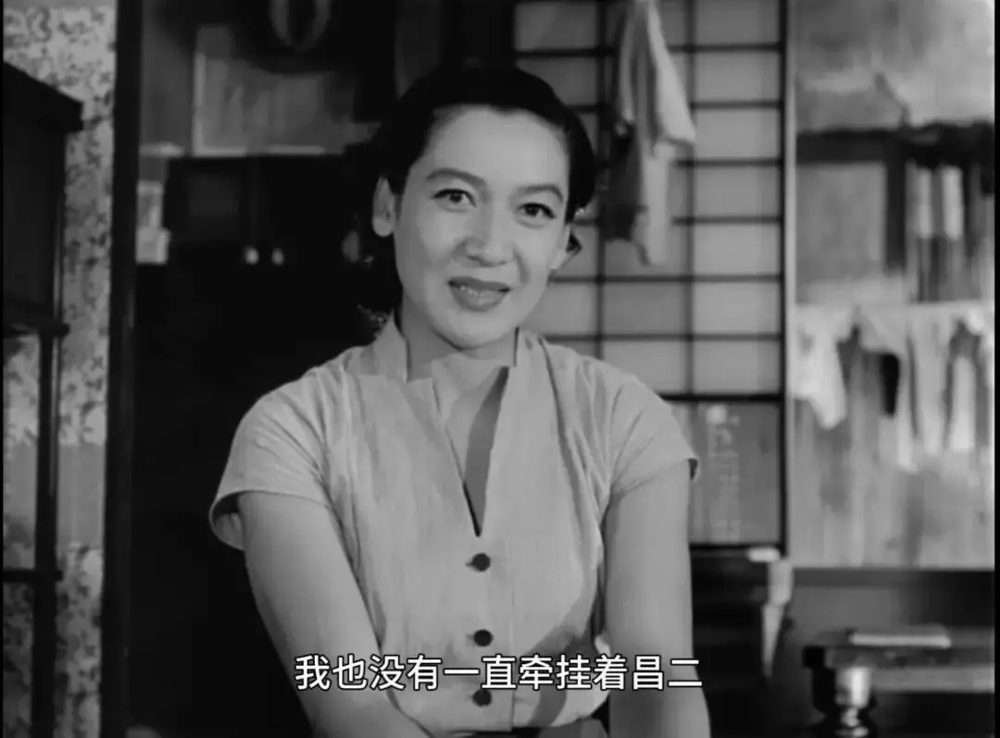
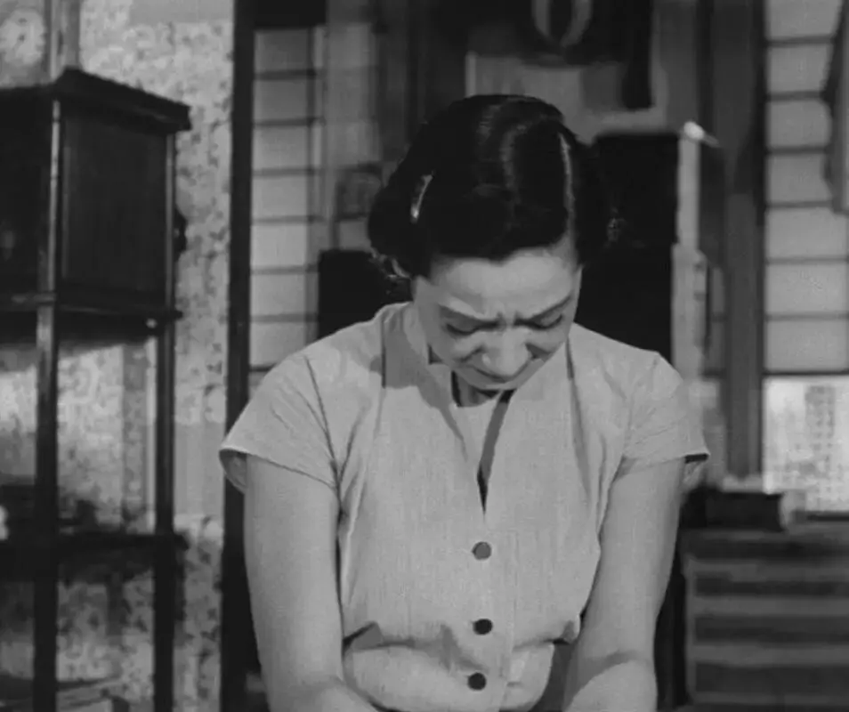
说完这番话，纪子忍不住落泪。
周吉却慈祥地告诉纪子：不要紧，你是一个好人，因为你坦诚。
纪子是小津放置在《东京物语》中的希望。
她代表着一种信念，或者说是一种善良。
在摇摇欲坠的现代家庭中，她守护着传统家庭的价值。
在追求独立和自我的世代，她对父母的尊敬胜过自己的幸福。
所以，纪子会让人非常震撼。
这不仅是因为现代都市中这样的纪子太稀缺。
更因为，纪子表达了无数父母心底里对儿女那种最朴素的盼望。
纪子让人有多感慨，现代家庭的隔阂就有多大。
因为我们终究会发现，我们最需要的是我们的家人。
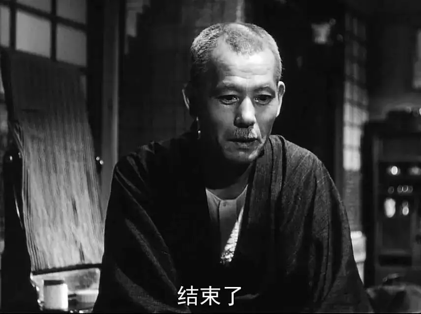
为你点一首歌
滑动下方
查看完整诗词
▼
这是网络中的一段话
分享给大家
《父母是隔在我们和死亡之间的帘子》
你和死亡好象隔着什么在看，没有什么感受
（是因为）你的父母挡在你们中间
等到你的父母过世了，你才会直面这些东西
不然 ，你看到的死亡是很抽象的，你不知道。
亲戚，朋友，邻居，隔代
他们去世对你的压力不是那么直接
父母是隔在你和死亡之间的一道帘子
把你挡了一下
你最亲密的人会影响你的生死观。
-END-
推荐阅读
▼
（点击文字即可获取全文）
我们好像很关心，但其实根本就不关心
这里没有挑逗你眼目情欲的小鲜肉
也没有挑动你肉体情欲的段子
更没有膨胀你今生骄傲的鸡血
我们只在乎那些最质朴真诚的作品
在那里我们才能恢复真正的想象力
我们也坚信这才是我们真正需要的

ID:Six_hundred_hits
长按二维码，一键关注
【六百击】
电影评论
尽情分享朋友圈

微信二维码打赏通道